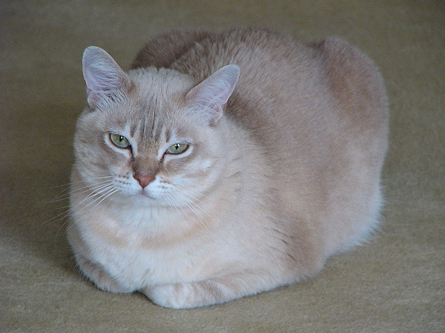

The Burmilla is a breed of domestic cat which originated in the United Kingdom in 1981. It is a cross between the Chinchilla Persian and Burmese breeds. Standards were produced in 1984, and the breed gained championship status in the United Kingdom in the 1990s.
The Burmilla was originally created accidentally in the United Kingdom. Two cats, a Chinchilla Persian named Sanquist, and Fabergé which was a Brown tortie burmese were both awaiting a partner of their own breed in different rooms. One night the cleaner left the door open. The two cats bred, producing four kittens born in 1981 that were so adorable that a new breed was born.[1]
In GCCF (Governing Council of the Cat Fancy), the Burmilla is considered part of the Asian cat breed. It is accepted in FIFe as the Burmilla. Only the Shaded and Tipped Silver varieties have been recognised in FIFe, CCCA, ACF and CFA as the Burmilla. As of late 2011 the Golden Shaded and Tipped Burmilla is also recognised within FIFe. One governing body in Australia has used the name Australian Tiffanie, however, there is not international acceptance and standardisation for this breed - Tiffany has been used to describe many different breeds having the appearance from Ragdoll to Birman and may contain any of these breeds and more. Many Australian Tiffanies in Australia contain more than three-quarters Persian Chinchilla and retain the appearance and temperament of the Old Fashioned Chinchilla. The name's use is declining in favour due to the lax standards for the breed name, the lack of unique identity and varied genetic makeup.
References:
This article uses material from the Wikipedia article ”Burmilla", which is released under the Creative Commons Attribution-Share-Alike License 3.0.
Picture: "Female Burmilla cat" by John Turner - Luna posing on the carpet. Licensed under CC BY 2.0 via Wikimedia Commons - https://commons.wikimedia.org/wiki/File:Female_Burmilla_cat.jpg#/media/File:Female_Burmilla_cat.jpg